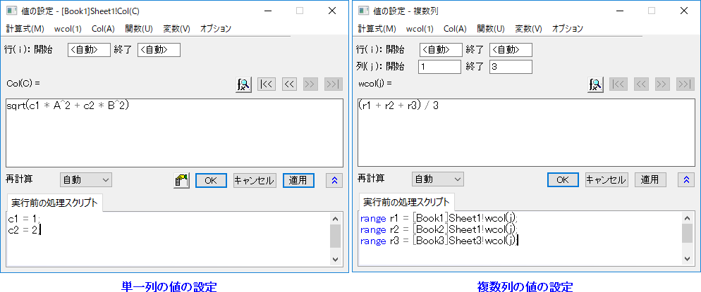
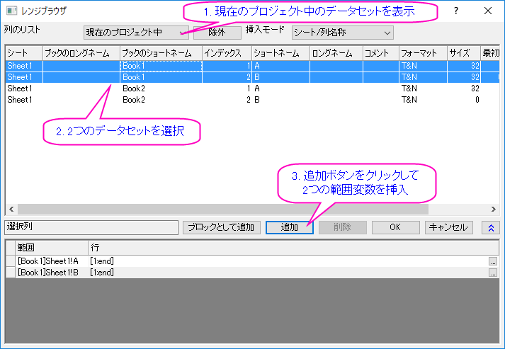
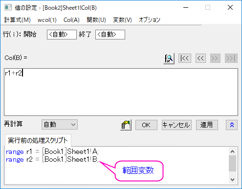
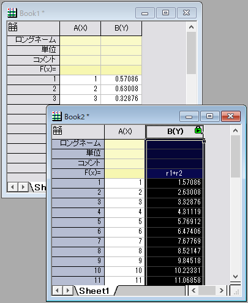
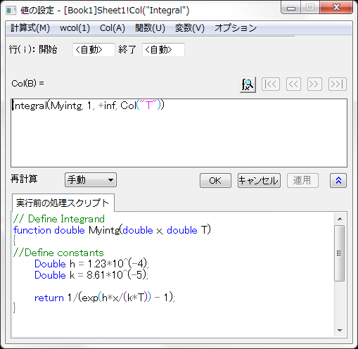
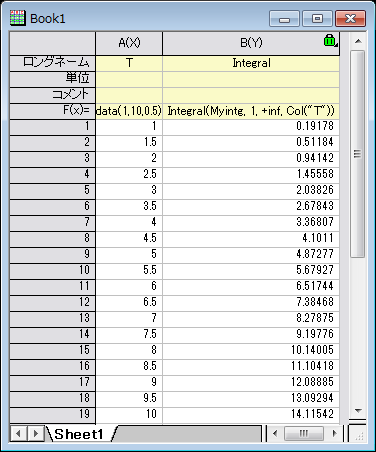

「値の設定」ダイアログボックスに数式を入力する
Wks-SetColVal-Expression
数式の基本
値の設定ダイアログで使われる計算式は、LabTalkのロジックに従います。計算式には、算術演算、範囲(range)変数、組込のLabTalk関数、ユーザ定義関数 などを含めることができます。数式を定義する場所が2ケ所あります。
- 列の計算式。1行の計算式を入力します。
- 実行前の処理スクリプト。複数行のLabTalkスクリプトをここに入力でき、これは列の計算式編集ボックスにある計算式を使って列の値がセットされる前に実行されます。
サンプルを利用できます。ダイアログメニューの計算式：サンプルのロードを選択して取得できます。
- 
数式入力のヒント
Origin 2017 SR0からは、デフォルトでスプレッドシートセル表記 (SCN)が有効になっています。SCNが有効の時、シンプルSCNや2017より前のバージョンをお使いの場合は、列値の設定ボックスかF(x)=列ラベル行のいずれかで、新しい表記、または、旧表記の利用が可能です。ただし、これは実行前の処理スクリプトでcol()やwcol()関数を使う場合、実行前の処理スクリプトにスクリプトを入力する場合や、ブラケット「{}」 some limitations applyを使う場合です。
- ショートネームで直接列を参照する場合、3文字までのショートネームに制限されます。そうでない場合、列参照は認識されません。ショートネームが3文字を超える場合、 col() または wcol()を使用します。2017より前の表記ではこの制限はありません。
- Origin 2022bから、ワークシート内に同じロングネームの列が複数ある場合、重複したロングネームの列を指定するためにショートネームとロングネームの両方を使用できます。シンタックスは、以下の通りです。
col(ShortName"LongName")
ショートネームを省略した場合、指定した LongName の列の中で最も左側にある列を参照します。
- 変数メニューは、計算式で使用する変数を定義する助けとなります。
- Originは、関数メニューに数多くの組み込み関数を用意しており、これらを計算式で利用することができます。関数の検索と挿入ダイアログを使って、組み込み関数の検索が可能です。
- また、自分でユーザ定義関数を作成することもできます。
- 関数内の簡易列表記をToken等の文字列パラメータとともに使用する場合、一重引用符の代わりに二重引用符を使用する必要があります。
- 文字 iとjは予約したシステム変数で、現在の行インデックスと列インデックスをそれぞれ保存しています。列に行番号を入力したい場合はiを、列番号を入力したい場合はjを列の計算式に直接入力します。
- iとjを列の式で使う場合、(または、F(x)= セルの場合、） ショートネームとの重複しないように小文字を使って参照します。
- LabTalkの条件演算子を使って列または範囲にデータを入力することができます。たとえば（4番目の列に入力する場合）、列の計算式にcol(3)==1?col(1):col(2)と入力して、3列目の値が1だった場合は1列目の値を4列目にコピーし、3列目の値が1以外の場合は2列目の値を4列目にコピーする、という処理が可能です。
- 列の計算式で{}表記を使うと、選択した列に\一連の等間隔の数字を入力できます。
- {begin:step:end} と入力すると、beginで開始して、増分stepでendで終了する一連の数字を入力します。
- {begin:end} と入力すると、beginで開始して、増分1でendで終了する一連の数字を入力します。
- 他のブックとシートからのデータはいくつかの方法で関連付けることができます。
- 直接参照を使って、[Book3]Sheet1!C (列)や[Book3]Sheet1!C1 (セル)に関連付けます。
- 変数メニュー
- 式の編集ボックスにあるLabTalkの置換表記を直接入力します。
列の計算式にのみ数式を追加する
列の計算式に1行の数式を入力して、実行前の処理スクリプトは空白にしておくことができます。列の計算式編集ボックス内の式は組み込み関数とユーザ定義関数を含めることができます。以下のサンプルで、これらの関数の使用方法をご紹介します。
サンプル 1
- 新しいワークブックを作成します。
- 列Aを選択し、右クリックして列値の一律設定：行番号を選択します。
- 列Bを選択し、右クリックして、列値の設定を選び、値の設定ダイアログを開きます。関数: 三角関数・双曲線関数: Cos(x) を選択し、cos(x) を列の計算式編集ボックスに追加します。変数xを選択し、値の設定メニューで、Col(A): Col(A)を選択します。これで、表記はcos(A)となります。OKをクリックすると、対応するA列の行から計算したコサインの値が入力されます。
実行前の処理スクリプトにのみ数式を追加する
実行前の処理スクリプト編集ボックスに複数行のLabTalkスクリプトを入力し、列の計算式は空白にしておくことができます。組み込み関数とユーザ定義関数に加え、任意のLabTalkスクリプトを入力できます。ですので、範囲(range)変数、 文字列変数、loop、LabTalkからアクセス可能なXファンクションを使用可能です。
以下のサンプルは、「サンプル1」と同じ結果を取得できます。
サンプル 2
- 新しいワークブックを作成します。
- 列Aを選択し、右クリックして、列値の一律設定：行番号を選択します。
- 列Bを選択し、右クリックして、列値の設定を選び、値の設定ダイアログを開きます。
- 実行前の処理スクリプトに、Col(B)=cos(Col(A))と入力し、OKボタンをクリックして、データを生成します。
次のサンプルでは、データの正規化を行う複数行のスクリプトを含むサンプルの式をロードします。
サンプル 3
- 新しいワークブックを作成します。
- 列Aを選択して右クリックし、ショートカットメニューから列値の一律設定：行番号を選択します。
- 再度、列Aを右クリックして、ショートカットメニューから列値の設定を選択し、値の設定ダイアログを開きます。
- 値の設定ダイアログのメニューから計算式：サンプルのロード：Normalize：column 0 to 1 を選び、実行前の処理スクリプトにスクリプトをロードします。そして、OKボタンをクリックし、データを正規化します。
|
Note: 実行前の処理スクリプトパネルの各LabTalkスクリプト行の末尾にセミコロン(;)を付ける必要があります。
|
サンプル 4
- 新しいワークブックを作成します。
- インポートウィザードボタン
 をクリックしてダイアログを開きます。
をクリックしてダイアログを開きます。
- データソースとして、\Samples\Graphing\Waterfall.datのファイルを選択します。完了ボタンをクリックして、データをインポートします。
- ワークシートをアクティブにして、列の追加ボタン
 をクリックします。ワークシートの最後までスクロールし、列をDW(Y)を確認します。
をクリックします。ワークシートの最後までスクロールし、列をDW(Y)を確認します。
- DW(Y)列を選択して右クリックし、ショートカットメニューから列値の設定を選択し、値の設定ダイアログを開きます。
- 実行前の処理スクリプトボックスに以下のスクリプトを入力します。
range r1 = col(DW); // 追加列を範囲変数に設定 r1 = wcol(2); // 範囲の初期値をセット int nc = wks.ncols; // 列の総数を取得 // すべてのy列をループしてそれらを合計 for(page.v1=3; page.v1<= nc-1 ; page.v1+=1) { range rY = wcol(page.v1); r1 += rY; } r1 = r1/(nc-2); //y列の平均を計算
- OKをクリックして、適用します。全Y列の平均値が計算され、DW(Y)列に出力されます。
列の計算式と実行前の処理スクリプトの両方に数式を追加する
列の計算式と実行前の処理スクリプトの両方にスクリプトを入力する必要が時々あります。例えば、実行前の処理スクリプトで範囲変数を定義し、それを列の計算式で使用するような場合です。
サンプル 5
- 新しいプロジェクトを作成します。"Book1"という新規ブックが作成されます。
- 列Aを選択して右クリックし、ショートカットメニューから列値の一律設定：行番号を選択します。
- 列Bを選択して右クリックし、ショートカットメニューから列値の一律設定：正規乱数を選択します。
- 新しいブック"Book2"を作成します。
- Book2の列Aを選択します。列を右クリックして、列値の一律設定：行番号を選択します。
- このワークブックのB列を選択します。右クリックして、ショートカットメニューから列値の設定を選択し、値の設定ダイアログを開きます。
- では、Book1の列を指す2つの範囲変数を挿入しましょう。値の設定ダイアログの変数：範囲変数の追加を選択します。レンジブラウザが開きます。以下のスクリーンショットのように、ダイアログで2つの範囲を選択します。(列のリストが現在のプロジェクト中であることを確認してください。):
- 
- OKをクリックして、値の設定ダイアログに戻ります。
- 列の計算式に、r1+r2 と入力します。値の設定ダイアログは次のようになります。
- 
- OKをクリックして列Bに入力するデータを生成します。列B内の各要素は、Book1の対応する要素の合計になっているはずです。
- 
サンプル 6
積分関数とユーザ定義関数を使用して、与えられたT値における積分を計算する方法を示すサンプルです。
- 新しいワークブックを作成します。
- 列AのロングネームをT に設定して、列Aの式を以下のように設定します。
data(1,10,0.5)
- B列のロングネームをIntegral として設定し、列Bを選択して右クリックして列値の設定を選択してダイアログを開きます。
- 実行前の処理スクリプトに定数、積分関数を下図のように入力して定義し、 Col(B)= 編集ボックスには積分の式を下図のとおりに入力します。
- 
- OKをクリックして、適用します。計算された積分結果は以下のようになります。
- 
実行前の処理スクリプトは以下の通りです。
// 積分を定義
function double Myintg(double x, double T)
{
//定数を定義
Double h = 1.23*10^(-4);
Double k = 8.61*10^(-5);
return 1/(exp(h*x/(k*T)) - 1);
}